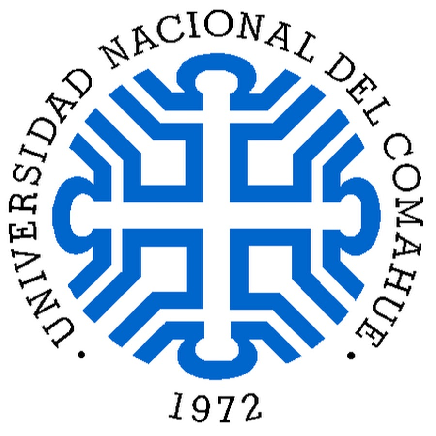
Becario
Institución: Universidad del Comahue
Inicio: 2026-06-01
Pruebas de migración desde SIU GUARANÍ 2 a SIU GUARANÍ 3

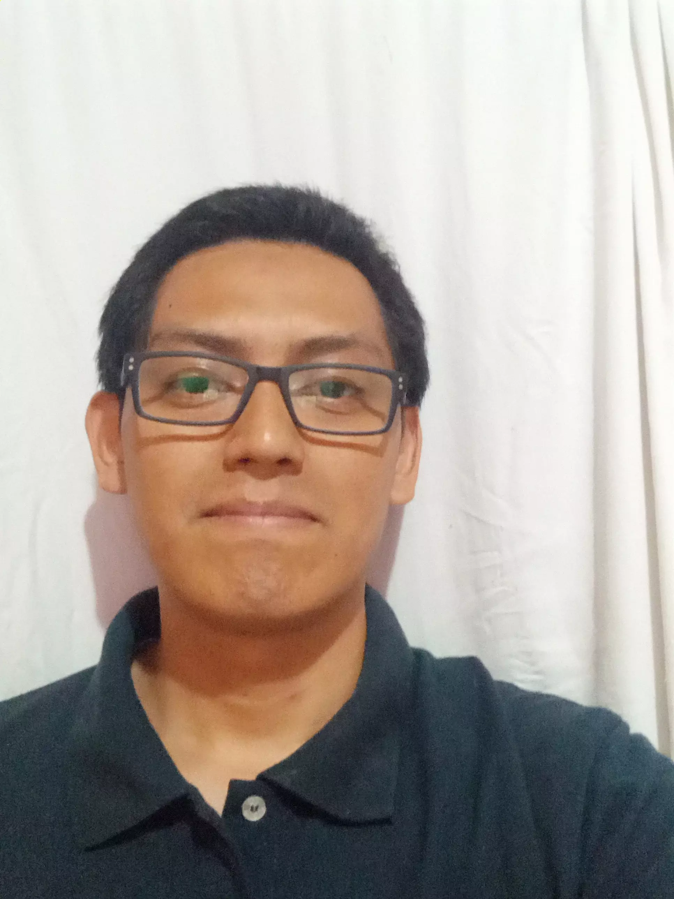
Analista programador universitario y estudiante de la Lic. en Cs. de la Computación de la Unco, buscando adquirir nuevas experiencias.

Institución: Universidad del Comahue
Inicio: 2026-06-01
Pruebas de migración desde SIU GUARANÍ 2 a SIU GUARANÍ 3
Institución: Universidad del Comahue
Estado: Título intermedio obtenido, cursando cuarto año
Comienzo: 2021
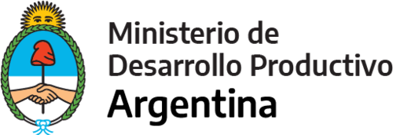
Institución: Ministerio de Desarrollo Productivo
Finalización: Enero/2023
Institución: Centro Universitario de Idiomas - UBA
Finalización: Septiembre/2023
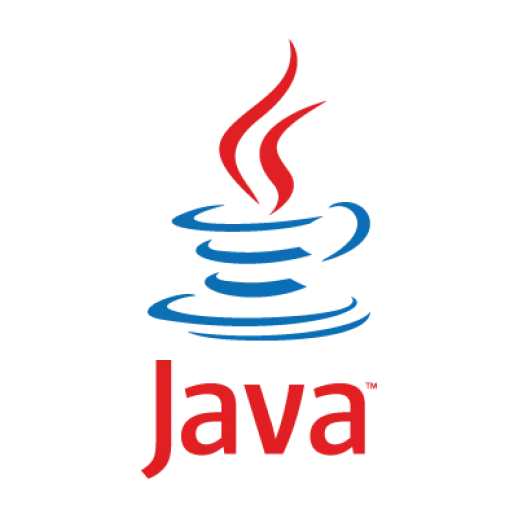
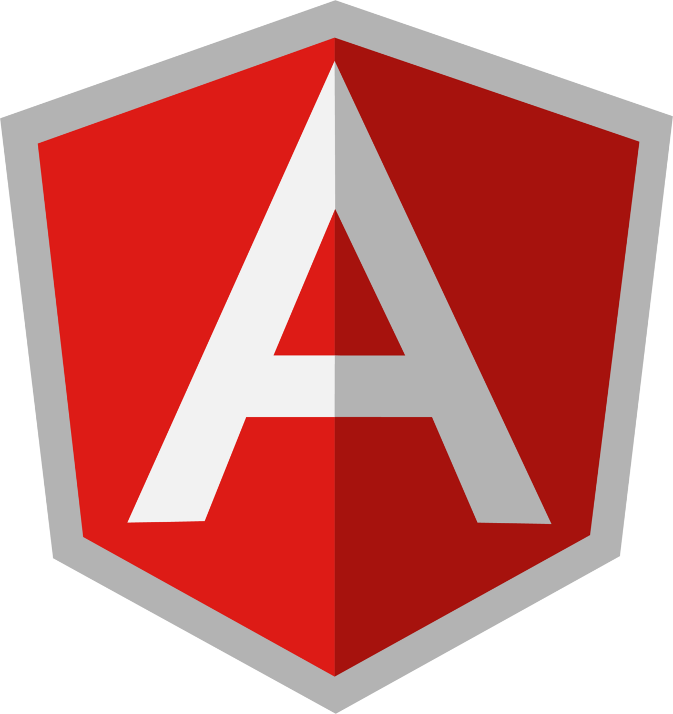
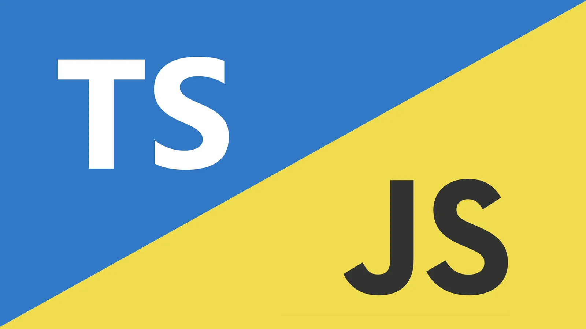
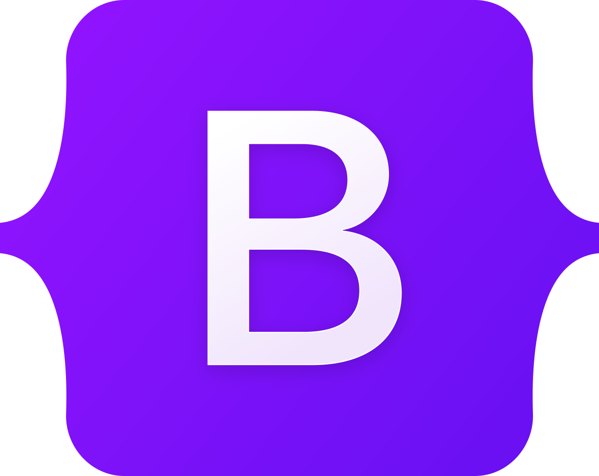
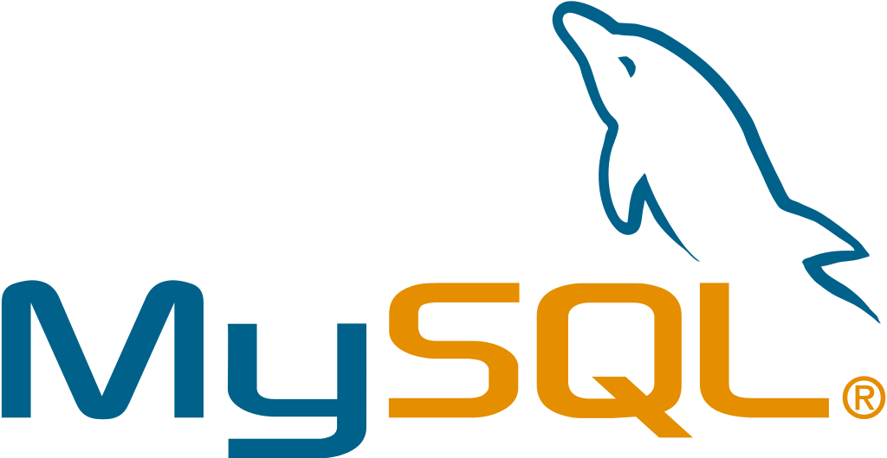
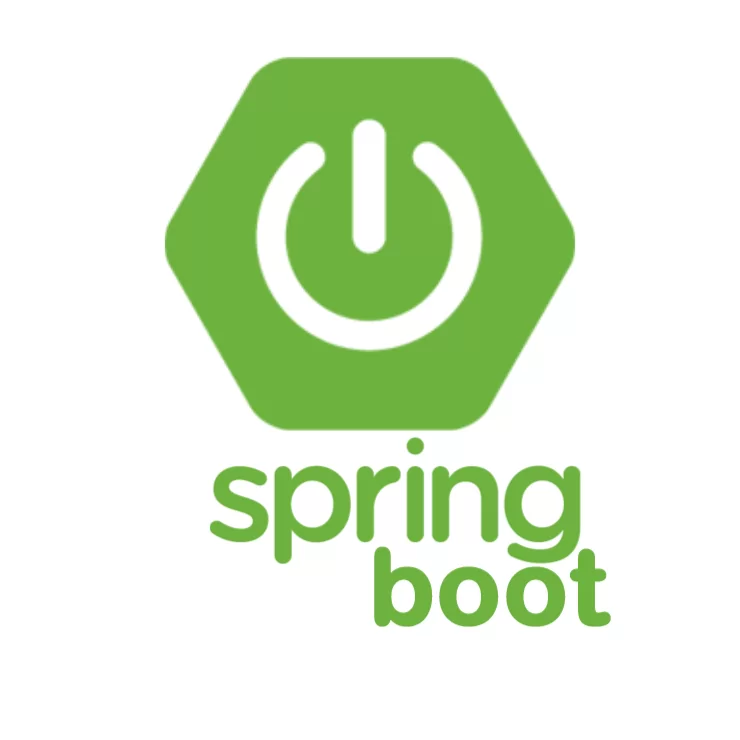
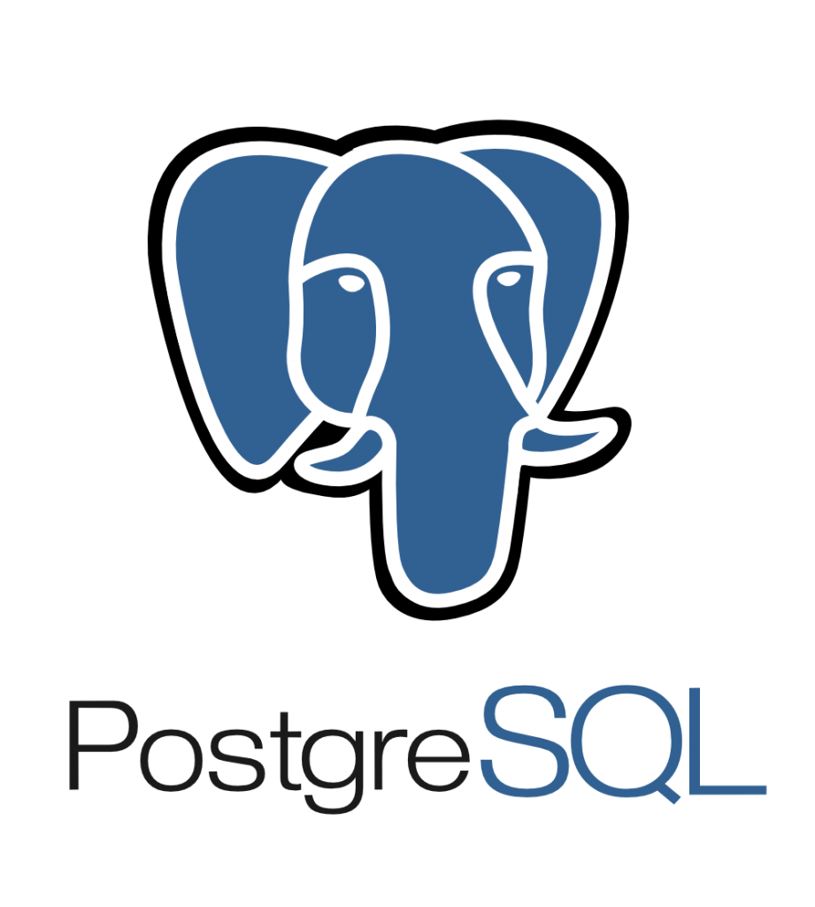
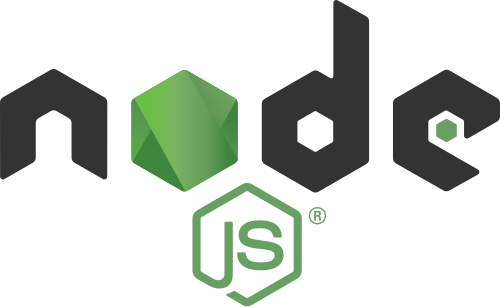
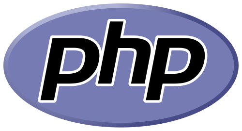
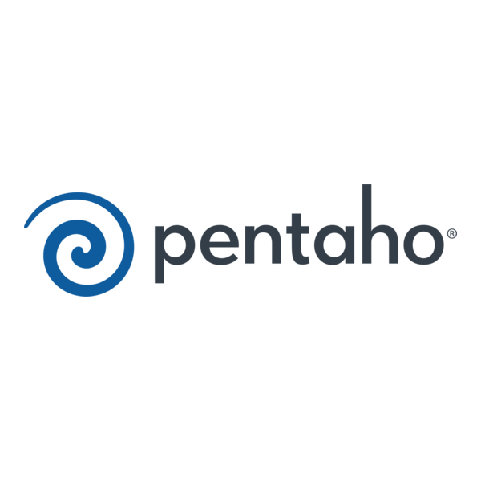
Desarrollo del Porfolio personal que aplica las tecnologías aprendidas en el curso #YoProgramo bajo una arquitectura de tres capas distribuida.
Participación en los siguientes proyectos de extensión